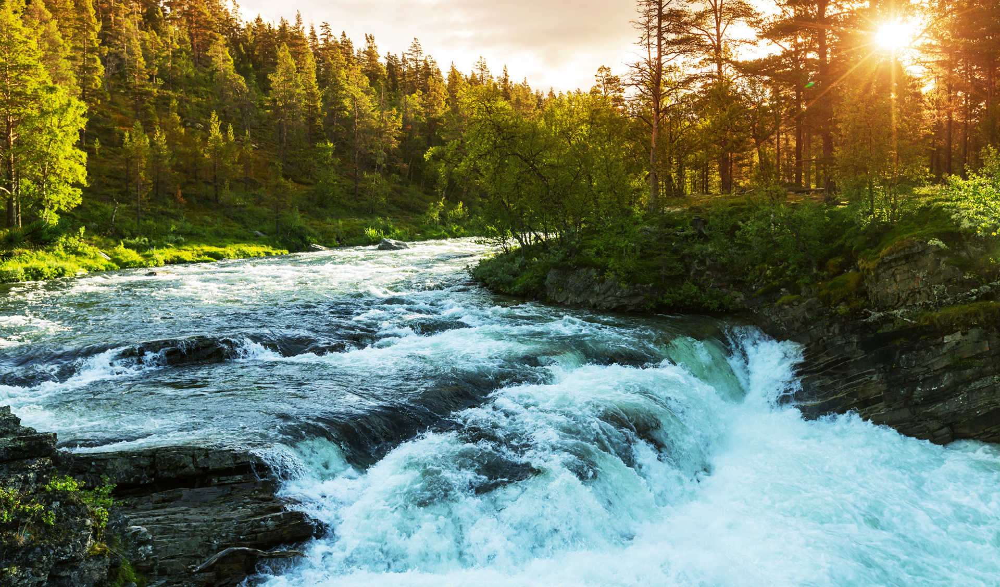
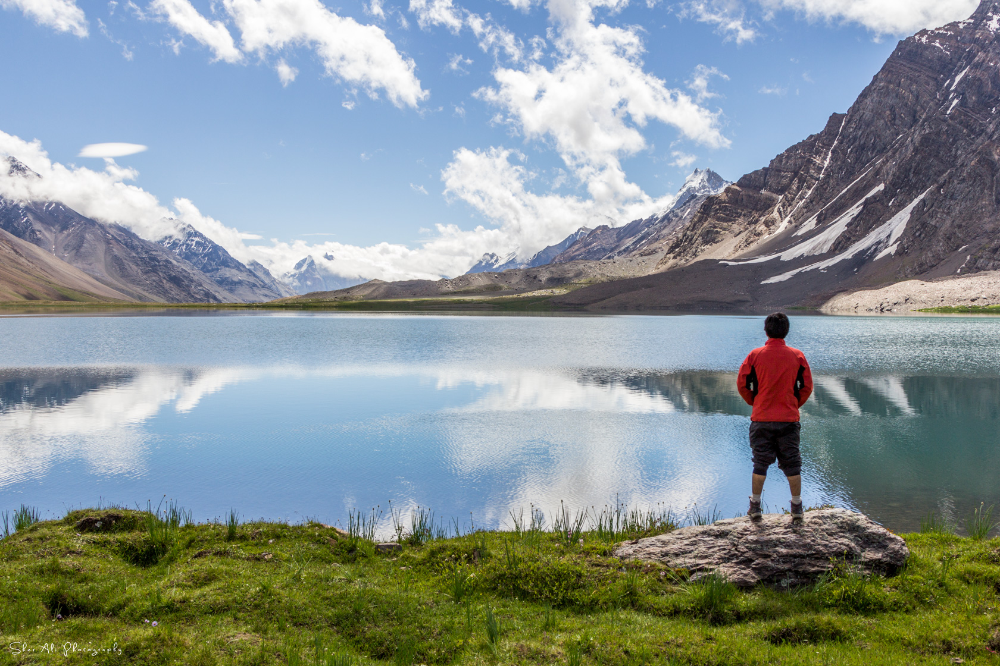
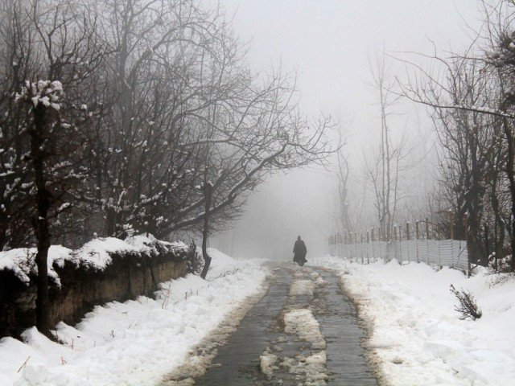
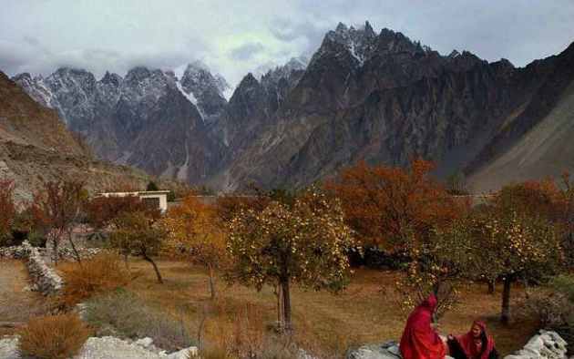

The summer months are most popular, offering sunny days and pleasant temperatures.

You can visit spots mentioned in itinerary to visit snow-caped mountains. These places are best to visit in December, January and February.

It also marks the start of autumn, with spectacular fall foliage lasting into October.

Springtime starts in late April through to early June and can be a delightful time of year to visit.
Online Tour & Hotel Bookings
Through Pakistan tour and travel you can book your family, honeymoon, group holiday tour to Neelum Valley, Naran, Murree, Swat, Skardu, Hunza and Chitral Valley on cheap rates.
And you may book more than 250 hotels across Pakistan
A warm welcome from Pakistan Tours and Travel Services. We are tour-operators in Gilgit-Balitistan, offering Tours Trips, Treks, Jeep safaris, expeditions and Hotels reservations any where in Azad Kashmir.
State of Gilgit is a peaceful area comparing to other provinces of Pakistan.
We at Pakistan Tours and Travel Services are committed to offer extra-ordinary traveling services to Pakistanis & Foreigners with great care and responsibility. Pakistan may not be much think-able for many travelers due to bad image created by local and international media, but there is a lot of interest to Visit AJK.
Tourist and visitors from all parts of the State & Pakistan can visit Gilgit-Baltistan without any restriction. However, they are advised to keep their identity with them. Foreign tourists can visit Azad Kashmir except the areas situated within 16 kilometers along the Line of Control (LoC).
Aenean elementum facilisis ligula

Consectetuer adipiscing elit. Nam pede erat, porta eu, lobortis eget, tempus et, tellus. Etiam neque. Vivamus consequat lorem at nisl. Nullam non wisi a sem semper eleifend. Donec mattis libero eget urna. Duis pretium velit ac mauris. Proin eu wisi suscipit nulla suscipit interdum. Aenean lectus lorem, imperdiet. Donec mattis libero eget urna. Duis pretium velit ac mauris.
© 2017 Pakistan Tour and Travel. All Rights Reserved.
B495 Third Floor National plaza , Commercial Market، Rawalpindi 46000